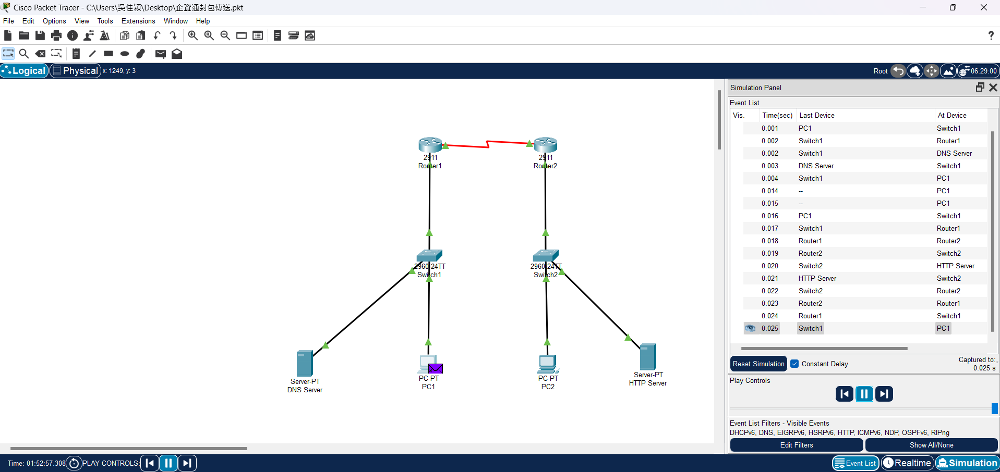

關於我 About Me

我是吳佳穎，目前就讀中原大學資訊管理系，性格開朗，喜歡交朋友
"Delulu is the Solulu. 敢於幻想，保持正面態度，一切皆有可能"
學歷 Education
2017-2019
高雄市立五福國中
2020-2022
高雄市立三民高中
2023-2026
桃園市中原大學資訊管理學系
經歷 Experience
大一上 - 管理學 (淨灘顧地球)
這次的淨灘活動，提高了我對環境保護的意識，讓我更加關注海洋污染及生態平衡的問題，實際參與淨灘，能更直接感受到海洋污染對自然環境的影響；透過此次淨灘活動,使我開始改變日常生活中使用一次性塑膠及其他對環境有害的物品，使用環保餐具、環保袋的頻率增加許多，做出對環境保護的具體行動。
大一下 - 企業資料通訊 (封包傳送)
在學習網路連接、封包繞送及防火牆設置的過程中，我了解了資料在網路中的傳輸路徑與安全性的重要性。透過實作封包傳送和路由設定，明白了如何優化網路效率並保護內部網路，防範潛在的外部威脅。這些知識讓我對企業網路架構的運作原理有了更深入的認識，並提升了我在網路安全方面的技能。

大二上 - 多媒體程式設計 (個人網頁製作)
製作個人網頁不僅能掌握基本的HTML和CSS技能，還能加深對網頁結構設計、視覺美感及版面配置的理解，從頁面佈局、色彩搭配到使用者體驗，每個細節都需要仔細考量，這過程也提升了我的設計細節處理能力，同時提升對使用者體驗和互動性的認識與應用能力。
程式技能 Programming Skills
PYTHON
JAVA
HTML/CSS
C++
聯絡資訊 Contact
- LINE: LINE
- Instagram: Instagram
- Email: jwu5939@gmail.com